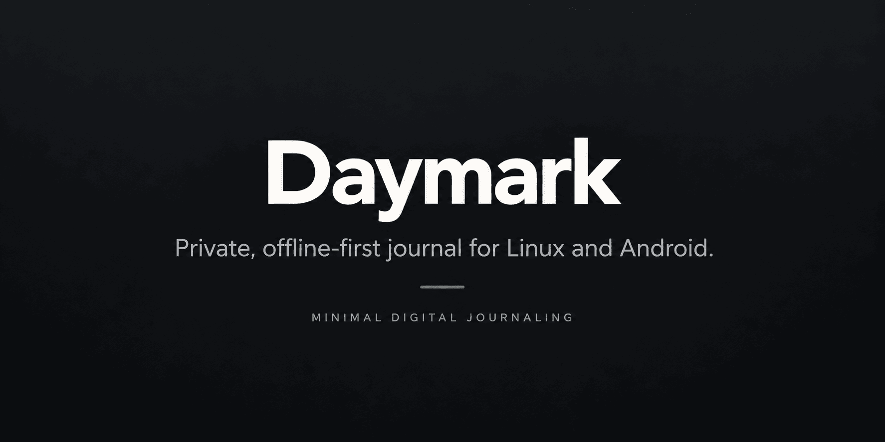

Today / Daily Log
Tasks, Events e Notes com Rapid Logging, histórico diário somente leitura e reflexão contextual.

Daymark é um aplicativo de Bullet Journal local-first e offline-first para Linux e Android. Ele preserva o espírito do método: registrar, revisar e decidir com intenção, sem transformar sua rotina em feed, placar ou dashboard.
O Daymark mantém o foco em registro rápido, reflexão deliberada e organização simples.
Tasks, Events e Notes com Rapid Logging, histórico diário somente leitura e reflexão contextual.
Calendário mensal, tarefas, histórico e Future Log contínuo para os próximos meses.
Coleções simples e fiéis ao método, com migração deliberada e referências sem duplicar conteúdo.
Índice persistente e busca local que levam diretamente à origem real de cada entrada.
Trackers mensais opcionais, finitos e reflexivos, sem gamificação, streaks ou pontuações.
Backup criptografado para recuperação e exportação deliberada em JSON ou Markdown.
A Wiki do Daymark reúne documentação de uso, conceitos do método, orientações de instalação e informações de referência do projeto em português.
Nada de streaks, XP, rankings, produtividade calculada ou mecanismos de engajamento.
O aplicativo não decide por você o que migrar, concluir ou descartar.
O produto está feature-complete. O desenvolvimento agora é manutenção, segurança e compatibilidade.
Versão beta atual para Linux x64 e Android. O produto permanece focado nos dois sistemas suportados, com desenvolvimento orientado a estabilidade, segurança, compatibilidade e manutenção.
Consulte as notas da beta.3 e a Wiki oficial antes de atualizar uma instalação existente. O Backup criptografado do Daymark continua sendo a fronteira segura para recuperação e migração de dados.
O Daymark é desenvolvido e validado para Linux e Android. O projeto foi pensado para ser pequeno, previsível e sustentável.
O código-fonte é público no GitHub. O projeto é mantido por Marcelo Trindade e faz parte do ecossistema DevNux.